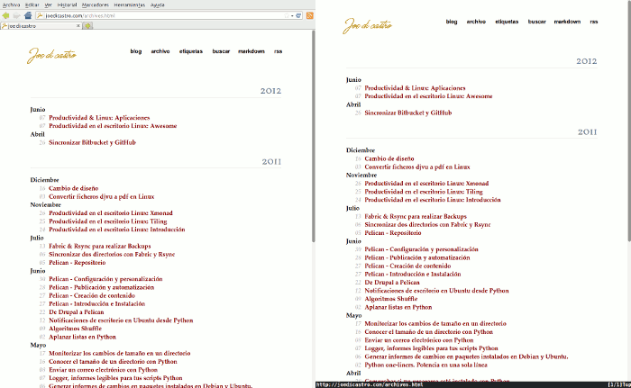
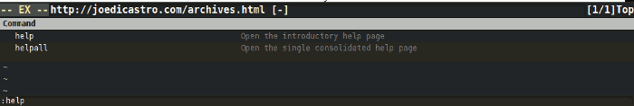
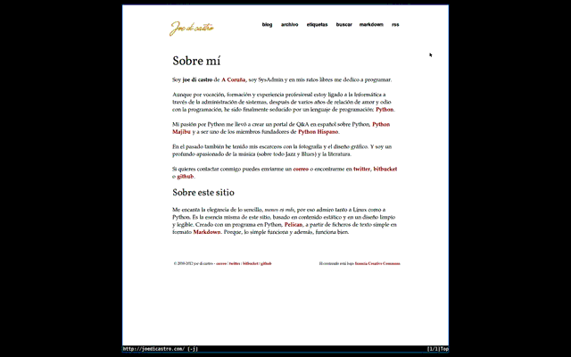
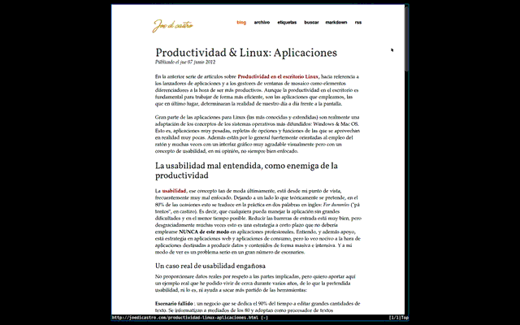
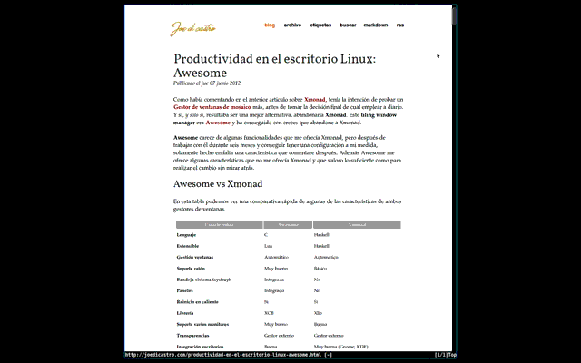
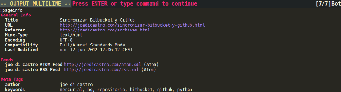
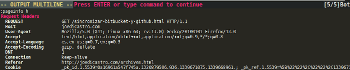
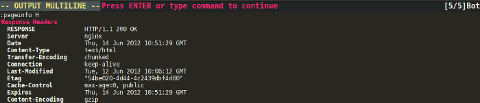

Pentadactyl como su nombre sugiere ("que tiene cinco dedos"), está pensado para ser usado con los cinco dedos de cada mano, ergo, el teclado. No es una aplicación en si misma, si no un complemento para el navegador web Firefox. Básicamente podríamos resumirlo en que es un complemento que te permite controlar Firefox desde el teclado. Pero sería un resumen bastante injusto para todo lo que te ofrece este plugin. Una pista, los atajos de teclado están basados en los de Vim.
Ejemplo de navegación web con Pentadactyl empleando únicamente el teclado. Observar como el puntero del ratón permanece estático en la misma posición (parte superior derecha de la pantalla). Es un ejemplo muy básico, pero llega para hacerse una idea.
En esta imagen se puede ver una ventana de Firefox estándar y una otra de Firefox con el complemento Pentadactyl activado (con mi configuración). Como se puede observar, se puede ganar una cantidad significativa de espacio en la ventana para la página web. En este caso son 170px, un 6% más de espacio vertical. En el caso de que abriéramos otra pestaña más, aparecería la barra de pestañas y solo ahorraríamos el espacio que ocupan la barra de menús y la de navegación. Aunque en mi configuración actual ya he eliminado también la barra de pestañas e incluso las barras de desplazamiento, solo se ve la línea de estado de Pentadactyl.

Pero... y la barra de herramientas de navegación, ¿no es necesaria? No, con este
complemento no lo es, dado que las direcciones las introduces a través de la
línea de comandos y la dirección de la página web siempre está visible en la
linea de estado inferior de Pentadactyl. Por ejemplo, para abrir la página web
de google, pulsamos la tecla o y luego escribimos google.es y pulsamos
↵ así de sencillo. Si quisiéramos abrirla en una nueva pestaña, bastaría
con pulsar t en lugar de o

Aquí se puede ver la línea de estado y la linea de comandos. La línea de
comandos tiene autocompletado y en la imagen se ve como se va a introducir el
comando que activa la completísima ayuda que proporciona el complemento. A la
línea de comandos se accede igual que en Vim, pulsando la tecla :
Características
Estas son algunas de las funciones que proporciona Pentadactyl para Firefox, sin contar con las extensiones disponibles para el mismo Pentadactyl:
- Atajos de teclado basados en vim. Soporta las mismas opciones de contexto que
Vim, por ejemplo, desplazarse dos pestañas hacia la derecha
2 <ctrl> + n - Comandos para prácticamente cualquier función de Firefox. Ejemplo: abrir la
ventana de complementos,
:dialog addonsque puede abreviarse como:dia addo↹ - Autocompletado para todos los comandos, opciones, marcadores, bufferes, motores de búsqueda, ...
- Características de privacidad adicionales a las de Firefox y muy potentes
- Búsqueda dentro de la página (con resaltado) y navegación a través de los resultados. Similar a la búsqueda de Vim. Se pueden emplear expresiones regulares
- Macros de teclado (se pueden grabar sobre la marcha) y se pueden personalizar los atajos de teclado y los comandos (pudiendo ademas añadir otros)
- Esquemas de color y extensiones (algunas muy interesantes)
- Navegación potente y rápida a través de enlaces, campos de formularios, áreas de texto, ... desde el teclado
- Linea de estado similar a la de Vim
- Se pueden ejecutar comandos de shell directamente en la línea de comandos de Pentadactyl
- Interfaz mínimo, pudiendo ocultar menús, barras de herramientas, barras de desplazamiento y pestañas
- Se pueden cargar scripts directamente con el comando
:source, soportando ficheros javascript y CSS, además de comandos propios de Pentadactyl - Se pueden emplear alarmas visuales o sonoras para indicarnos errores
- Posibilidad de establecer marcadores de posición dentro de páginas
- Marcadores rápidos para acceder de forma rápida a los sitios que queramos
- Se pueden editar los campos de texto desde un editor externo
- AutoComandos para ejecutar acciones activadas por ciertos eventos
- Sistema de ayuda incorporado completísimo que cubre todo lo que el plugin
puede hacer. A la ayuda se accede bien a través de los comandos
:helpo:helpallo bien pulsando la teclaF1
No es mi intención explicar aquí la forma de trabajar con el complemento, ya que posee tantas opciones y una ayuda tan completa, que lo considero excesivo. Además no es necesario conocer toda su funcionalidad, de hecho yo sigo infrautilizandolo y voy descubriendo funciones nuevas de vez en cuando. Por ejemplo, hasta que no he vuelto a repasar sus funciones para escribir este articulo, estaba empleando un plugin (It's All Text!) para editar los campos de texto con gVim, ahora lo hago también con Pentadactyl y de manera aún más sencilla. Y con este ya van ocho complementos para Firefox que he dejado de usar porque los suplo con Pentadactyl.
Mi configuración
Mi configuración es realmente sencilla, ya que aparte de emplear un par de
extensiones, un par de comandos y un esquema de color, lo demás es cambiar
ciertas opciones predefinidas del mismo. La configuración la he dejado
disponible en mi repositorio de dotfiles, en GitHub.
Validar el HTML de una página
Este es un comando que he añadido a la configuración para poder validar el HTML de una página empleando la herramienta del W3C. Como se puede ver, se basa en emplear javascript para definir lo que queremos hacer:
command! -description='Validar XHTML' valid :open javascript:void(location='http://validator.w3.org/check?uri='+escape(location))
Aquí se puede ver como funciona:

Gracias al autocompletado de Pentadactyl, solo es necesario escribir las dos primeras letras del comando y pulsar el tabulador y finalmente Intro para ejecutar la operación. Nos aparece la herramienta del W3C diciendo que la página ha validado correctamente como HTML 5. Y desde luego esto es más rápido que emplear el ratón conjuntamente con otro plugin.
Guardar paginas en Pocket (anteriormente Read it Later)
Para guardar páginas en Pocket, el que hasta hace unas semanas era Read it Later, empleo también otro comando. Antes empleaba el plugin oficial, pero no solo consumía memoria si no que para emplear solamente una combinación de teclas, empleo un comando de Pentadactyl y me ahorro el tenerlo instalado.
command! pocket -description "Bookmarklet: Save to Pocket" open javascript:(function(){ISRIL_H='83dd';PKT_D='getpocket.com';ISRIL_SCRIPT=document.createElement('SCRIPT');ISRIL_SCRIPT.type='text/javascript';ISRIL_SCRIPT.src='http://'+PKT_D+'/b/r.js';document.getElementsByTagName('head')[0].appendChild(ISRIL_SCRIPT)})();
Podemos ver en esta animación como funciona este comando:

La clave para este comando es bien sencilla, primero tener una cuenta en Pocket, luego ir a la página en la que se nos proporciona un botón para la barra de marcadores para añadir las páginas a Pocket. Copiad con el botón derecho la ruta del enlace que os proporciona ese botón, et voilà!, ahí tenéis el código javascript que necesitáis para el comando. Luego para ejecutar el comando solo necesitáis estar logueados en Pocket para que funcione.
Editar áreas de texto con un editor externo
Esta opción es para muy cómoda cuando se trata de editar grandes áreas de texto, pues un editor externo te proporciona mejores y más cómodas herramientas. Además en caso de que haya algún problema al enviar el texto, sigues teniendo la copia en el editor.
Activar esta opción es muy sencillo, para Linux y Gvim, añadir esto a el archivo de configuración:
set editor='/usr/bin/gvim -f +<line> <file>'
Después puede ser empleado como comentaba para editar áreas de texto, o para abrir el código fuente de una página, entre otras posibilidades.
Readability
Para usar este servicio empleo una extension, readability.js, que es
necesario descargar y añadir al directorio ~/.pentadactyl/plugins/. Para
ejecutarlo solo necesitamos emplear el comando :rea ↹ ↵, como podemos ver
en esta animación:

HTTP Headers
Esta es otra extensión que nos permite ver las cabeceras HTTP de una página. Es una de las extensiones oficiales y al igual que la anterior, basta con añadirla al directorio de plugins de Pentadactyl.
Si queremos ver la información que Pentadactyl nos ofrece de una página,
escribimos el siguiente comando :pageinfo y podemos ver algo como esto:

Ahora, si queremos ver las cabeceras, tenemos estas dos opciones:
- Request Headers,
:pageinfo h

- Response Headers,
:pageinfo H

Y podemos ver las dos a la vez empleando :pageinfo hH
Alternativas
Existen diferentes alternativas para este complemento, tanto para el mismo Firefox, como para otros navegadores. Pero ninguna es tan completa como este.
Podríamos empezar por Vimperator, que es el plugin original, ya que Pentadactyl es un fork del mismo por parte de algunos de los desarrolladores originales del mismo. Luego tenemos a Vimium que en este caso es una versión del mismo plugin para Chrome.
Para Chrome/Chromium tenemos también varios plugins disponibles,
Existen alguno que otra solución para Safari y Opera, si no me equivoco.
Navegadores con control a través del teclado
Existen una serie de navegadores, todos ellos pensados para ser muy ligeros y todos basados en Webkit, que implementan la navegación por teclado por defecto. Además estos que muestro están basados en los atajos de teclado de Vim.
- Uzbl
- Vimprobable
- dwb
- luakit, orientado a programadores y usuarios avanzados.
Teledactyl
Los mismo desarrolladores de Pentadactyl tienen disponible otro plugin para la otra gran herramienta de la Mozilla Foundation, el cliente de correo electrónico Thunderbird , y aunque está en desarrollo en fase muy temprana, se puede usar: Teledactyl. Aunque si queremos emplear un plugin similar, pero con un desarrollo más maduro, podemos escoger la herramienta hermana de Vimperator, Muttator
Productividad
Se qué me dejo muchas posibilidades de este plugin en el tintero, pero el articulo se haría eterno. Si no ha despertado ya tu curiosidad por lo que te he contado y mostrado, difícilmente lo hará ya. Ahora bien, si decides probarlo, entonces seguro que serás el primero en mirar la ayuda para intentar sacarle todo el jugo que este complemento te aporta. A lo poco que lo domines, incrementara tu productividad en la navegación web considerablemente.
Y es que una vez te acostumbras a él -si conoces Vim y tienes soltura con él, todo te será muy natural- la diferencia entre navegar con el teclado y el ratón es abismal, no hay color. Tamaña es la diferencia que ni siquiera me planteo el cambio de navegador por otro, porque todos carecen de Pentadactyl. Si navegas habitualmente por la red, agradecerás mucho el tiempo que un plugin como este te devuelve para emplearlo en otras tareas.
Comentarios !